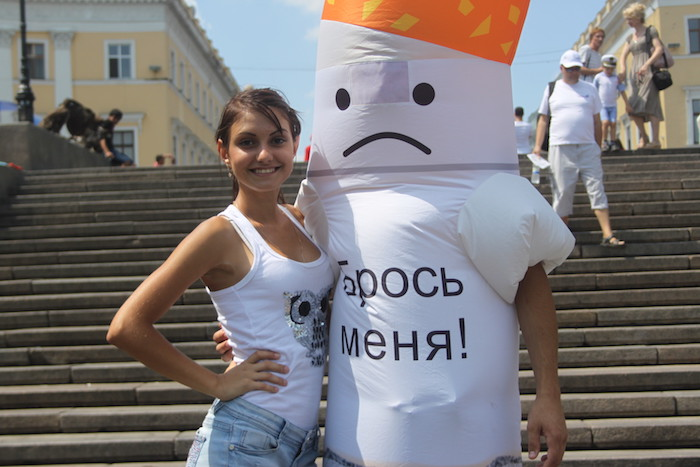

Общественная негосударственная неприбыльная организация «Бросим курить вместе» существует на протяжение шести лет за счет автора книги Бросим курить вместе Алексея Коваля и пожертвований частных лиц, небезразличных к судьбе людей, ставших никотинозависимыми.
Мы ведем активную работу по популяризации здорового образа жизни и оказанию помощи всем слоям населения в борьбе с табачной, алкогольной и наркотической зависимостями в Украине и Европе.
За эти годы было проведено тысячи акций, десятки круглых столов, несколько туров по Украине по популяризации здорового образа жизни.
Отчеты об этих мероприятиях вы сможете увидеть на нашем сайте www.quitsmokingtogether.org
Сейчас мы объявили сбор денег на перевод книги «Бросим курить вместе» на десять языков мира: Французский, Немецкий, Китайский, Японский, Арабский, Персидский, Итальянский, Испанский, Румынский, Белорусский
Это только начало.
Мы планируем:
1) создавать электронные книги для бесплатной раздачи во всем мире всем желающим избавиться от никотиновой зависимости;
2) интеграцию этих языков в приложения на Android и iOS для доступного чтения книги и работы с материалом, проведений акций, конференций по профилактике курения у подростков;
3) перевод книги Алексея Коваля «Мама, я не курю», которая готовит подростка к предложению закурить, а родителей к грамотному оказанию помощи подростку;
У нас большие планы, но увы, небольшие возможности.
Мы просим Вас оказать посильную помощь и спасти одну или несколько жизней, ведь бросивший курить человек может прожить на десять-двадцать лет дольше и именно вы подарите этим людям годы жизни. Эти люди увидят своих детей, внуков, сделают доброе дело, посадят дерево, построят дом, помогут нуждающимся.
Спасти жизнь просто. Окажите нам посильную финансовую помощь и возможно вы спасете жизнь.
Так просто и так много! Все в ваших руках!

Ваша помощь важна для нас! Каждый день от никотинозависимости умирает десятки человек. Оказывая помощь вы спасаете жизнь!
Пожалуйста не забудьте прислать нам свои контактные данные любым удобным для вас способом указанным в разделе «Контакты»
Settlement account of our organization (USD):
Company Name: "QUIT SMOKING TOGETHER"
The bank account of the company: 26007052657883
Name of the bank: PJSC CB "PRIVATBANK", 1D HRUSHEVSKOHO STR., KYIV, 01001, UKRAINE
Bank SWIFT Code: PBANUA2X
Company address: UA 03141 Kyiv, st. Solomenskaya 23b, flat 76.
IBAN Code: UA093206490000026007052657883
correspondent banks
Account in the correspondent bank: 001-1-000080
SWIFT-code of the correspondent bank: CHASUS33
Correspondent bank: JP Morgan Chase Bank,New York ,USA
or Account in the correspondent bank: 890-0085-754
SWIFT-code of the correspondent bank: IRVT US 3N
Correspondent bank: The Bank of New York Mellon, New York, USA
Settlement account of our organization (Euro):
Company Name: "QUIT SMOKING TOGETHER"
The bank account of the company: 26004052657767
Name of the bank: PJSC CB "PRIVATBANK", 1D HRUSHEVSKOHO STR., KYIV, 01001, UKRAINE
Bank SWIFT Code: PBANUA2X
Company address: UA 03141 Kyiv, st. Solomenskaya 23b, flat 76.
IBAN Code: UA753206490000026004052657767
Correspondent banks
Account in the correspondent bank: 400886700401
SWIFT-code of the correspondent bank: COBADEFF
Correspondent bank: Commerzbank AG ,Frankfurt am Main, Germany